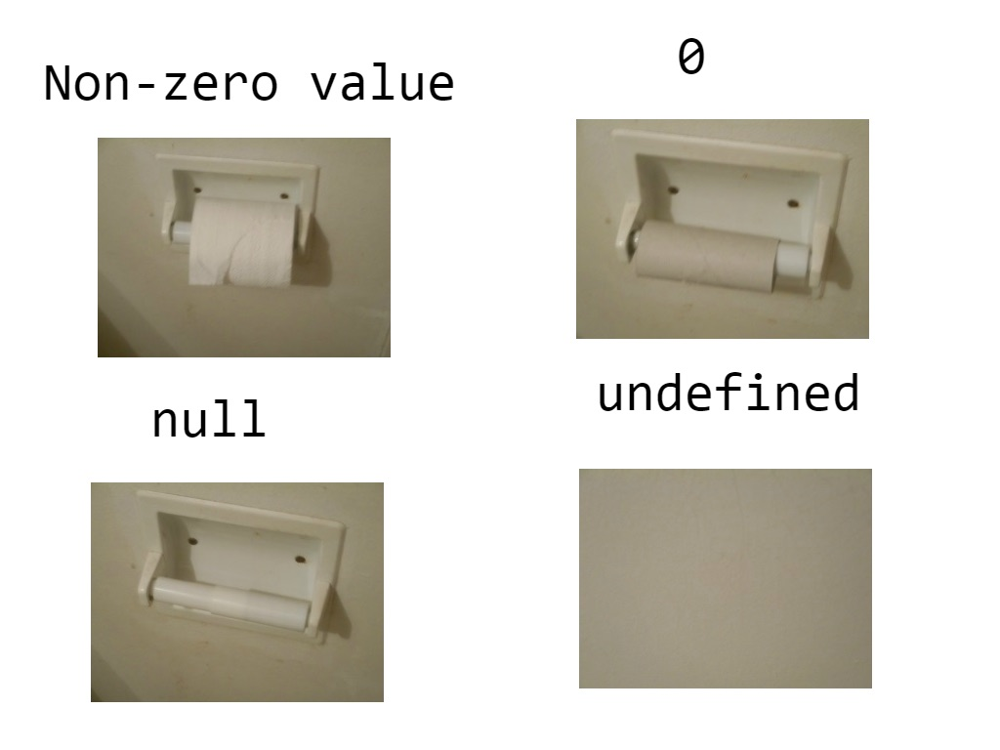

JavaScript
JavaScript Language Basics
What is JavaScript
- Lightwight
- Cross-platform
- Object-oriented
Primitive Data Types
| Type | Values |
| Undefined | undefined |
| Null | null |
| Number | -1, 0, 1.5, 5.7e+308, -Infinity, +Infinity, NaN |
| String | 'Ze', "Manel" |
| Boolean | true, false |
Primitive Data Types
Dynamic Typing
var taxit = 15; // Number
taxit = 'great'; // now is a String
taxit = { members: 15, office: 'somewhere' } // Object
How to return the type of a value?
console.log(typeof taxit);
// result?
What if...
var hello = 'Hi';
var size = 15;
console.log(hello + ' ' + size);
Type Coercion
1 + 2 + '3'; // '33'
1 + '2' + 3; // '123'
1 + true + true + false; // 3
true + '1'; // 'true1'
1 + ''; / '1'
'5' * 3; // 15
'5' * false; // 0
2 / '2'; // 1
2 / 'a'; // NaN
2 + null + ''; // '2'
null + true; // 1
Type Coercion
Falsy Values
- false
- 0
- '' or ""
- null
- undefined
- NaN

Truthy Values
! Falsy ValuesFunctions
Function Statement/Declarations
function add(num1, num2) {
return num1 + num2;
}
- A function statement declares a function
- They have a name
- Load before any code is executed (thanks to Hoisting)
- Use when you want to create a function on the global scope and make it available throughout your code
Functions
Function Expressions
var add = function(a1, b2) {
return a1 + b2;
};
add(1, 2); // 3 :-)
- The name may be ommitted, making that funcation "anonymous"
- Do not hoist.
- Use to avoid polluting the global scope.
add(1, 2); // BOOM! :-(
var add = function(a1, b2) {
return a1 + b2;
};